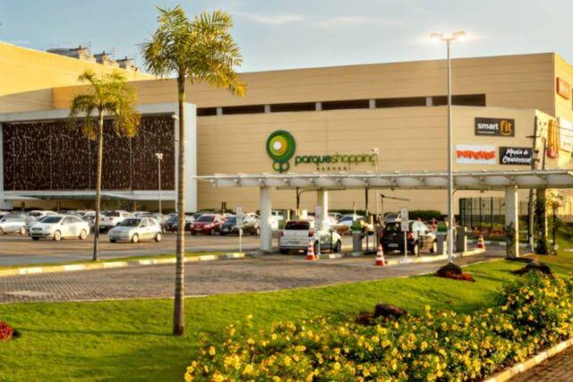

Shopping Parque Barueri
Um Shopping grande que possui uma diversa variedade de lojas e serviços, um cinema (Cinépolis), um parque de diversões (Neo Geo Family) e uma ampla praça de alimentação, um lugar perfeito para passear e passar o tempo com os de verdade.
📍Barueri • Gratuito